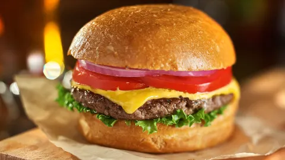

Hamburger

This recipe is from allrecipes.com and if by some miracle you are viewing this page you should check them out for more highly rated recipes. The hamburger that we are going to prepare is described as best hamburger ever and I am just going to trust them on that one and not question it at all.
Ingredients
- 1 1/2 pounds lean ground beef
- 1/2 onion, finely chopped
- 1/2 cup shredded Colby Jack or Cheddar cheese (I am going to start questioning them here - should be American Cheese)
- 1 egg
- 1 (1 ounce) envelope dry onion soup mix
- 1 clove garlic, minced
- 1 tablespoon garlic powder
- 1 teaspoon soy sauce
- 1 teaspoon Worcestershire sauce
- 1 teaspoon dries parsley
- 1 teaspoon dried basil
- 1 teaspoon dried oregano
- 1/2 teaspoon crushed dried rosemary
- salt and pepper to taste
Steps
Following steps are just copy pasted from the source site linked in the Description.
- Preheat an outdoor grill for high heat and lightly oil the grate.
- Meanwhile, combine ground beef, onion, cheese, egg, onion soup mix, minced garlic, garlic powder, soy sauce, Worcestershire sauce, parsley, basil, oregano, rosemary, salt, and pepper in a large bowl. Use your hands to form the mixture into 4 patties.
- Cook patties on the preheated grill until no longer pink in the center and the juices run clear, about 4 to 5 minutes per side. An instant-read thermometer inserted into the center should read at least 165 degrees F (74 degrees C).
- Voila!